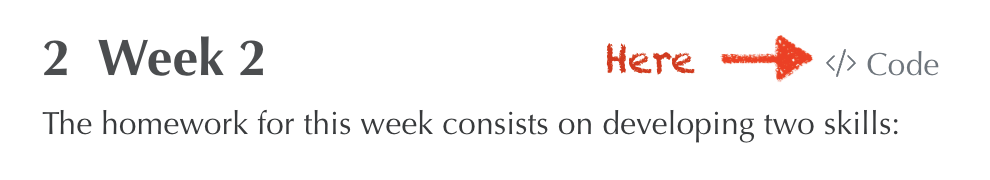

Note. You should be able to see the source code for this document in my github repository or by clicking on the </> Code button at the top, as shown here:

Note. The YAML for this file is different because this document is technically part of a quarto book.
You should also type this into the console after installing tinytex:
Code
tinytex::install_tinytex()
Exercise
Download this .qmd file and put it into your project folder.
Change Figure 1 (the cat picture) to an image of your liking. Adjust the caption accordingly.
Change Equation 1 to a different equation.
Hint: If your not familiar with writing these sorts of equations, you can ask ChatGPT to generate the latex code for a different equation—e.g., “the normal distribution.”
Change the “citations paragraph” at the end to so that it corresponds to yourself—i.e., different name, different citations.
Edit the YAML file so that it includes your name (name), the appropriate date (date), a different font (mainfont), and whatever csl file you decided to go with (csl).
Toggle between the Source and Visual editors and try to understand what is going on.
Create a pdf and an html file.
Hint: This is how my .pdf and .html files look like.
Upload the .qmd, .pdf, and .html files to your github repository.
---title: "Week 2"callout-appearance: simplecallout-icon: false---The homework for this week consists of developing two skills:1. Writing technical reports using [Quarto](https://quarto.org/docs/get-started/authoring/rstudio.html).2. Data wrangling using the [`dplyr`](https://dplyr.tidyverse.org/) package.Note. You should be able to see the source code for this document in [my github repository](https://github.com/acastroaraujo/socStats/blob/main/week1.qmd) or by clicking on the `</> Code` button at the top, as shown here:{width="90%"}*Note. The YAML for this file is different because this document is technically part of a [quarto book](https://quarto.org/docs/books/).*## CommunicationSkim [Chapter 29](https://r4ds.hadley.nz/quarto) in *R for Data Science* [@wickham2023].[^week2-1][^week2-1]: Some additional resources to skim: - <https://quarto.org/docs/get-started/authoring/rstudio.html> - <https://quarto.org/docs/visual-editor/technical.html>You will then need to do the following:1. Install Zotero in your computer if you haven't already.2. Read [Citations from Zotero](https://quarto.org/docs/visual-editor/technical.html#citations-from-zotero) and stop reading when you get to "Group Libraries." *This is 3 paragraphs.*3. Go to this repository and download any CSL file you want---e.g., I am using the [this one](https://github.com/citation-style-language/styles/blob/master/american-journal-of-sociology.csl). Save the file in your Project folder.4. Install the following packages:```{r}#| eval: falseinstall.packages("modelsummary")install.packages("flextable")install.packages("tinytex")``` You should also type this into the console after installing `tinytex`:```{r}#| eval: false tinytex::install_tinytex()```::: callout-note**Exercise**Download [this .qmd file](https://github.com/acastroaraujo/socStats/blob/main/quarto_template.qmd) and put it into your project folder.- Change Figure 1 (the cat picture) to an image of your liking. Adjust the caption accordingly.- Change Equation 1 to a different equation. Hint: If your not familiar with writing these sorts of equations, you can ask ChatGPT to generate the latex code for a different equation---e.g., "the normal distribution."- Change the "citations paragraph" at the end to so that it corresponds to yourself---i.e., different name, different citations.- Edit the YAML file so that it includes your name (`name`), the appropriate date (`date`), a different font (`mainfont`), and whatever csl file you decided to go with (`csl`).- Toggle between the Source and Visual editors and try to understand what is going on.- Create a pdf and an html file. Hint: This is how my [`.pdf`](https://github.com/acastroaraujo/socStats/blob/main/quarto_template.pdf) and [`.html`](https://htmlpreview.github.io/?https://github.com/acastroaraujo/socStats/blob/main/quarto_template.html) files look like.- Upload the `.qmd`, `.pdf`, and `.html` files to your github repository.:::## Data Wrangling::: callout-note**Multiple Exercises**Read [Chapter 4](https://r4ds.hadley.nz/data-transform) of R4DS [@wickham2023] and complete the following exercises:- **4.2.5:** all six exercises- **4.3.5:** all seven exercises- **4.5.7:** all six exercisesAnswer these exercises in a quarto document and upload both `.qmd` and `.html` files to your github repository, just as you did for last week's homework.:::***Yes, this means that for this week you will upload five different files to your github repository!***